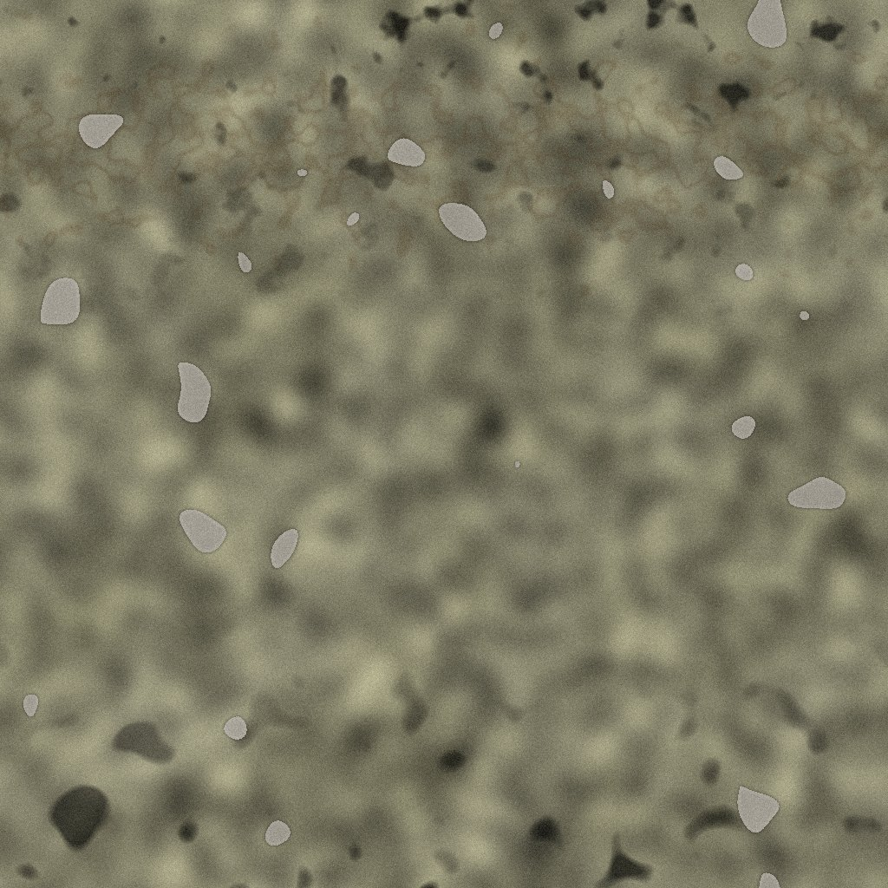
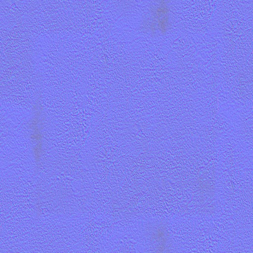
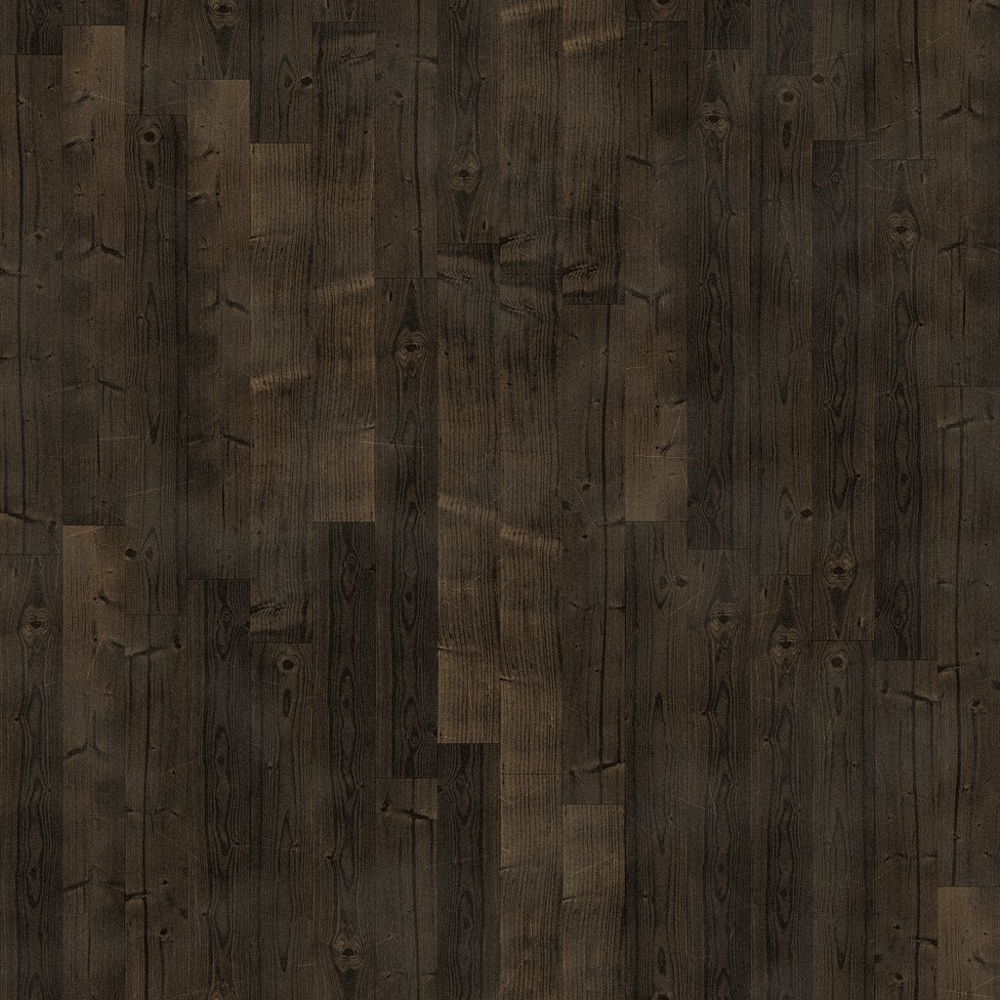
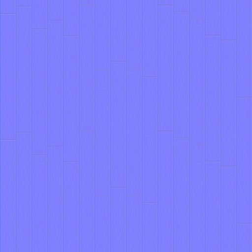
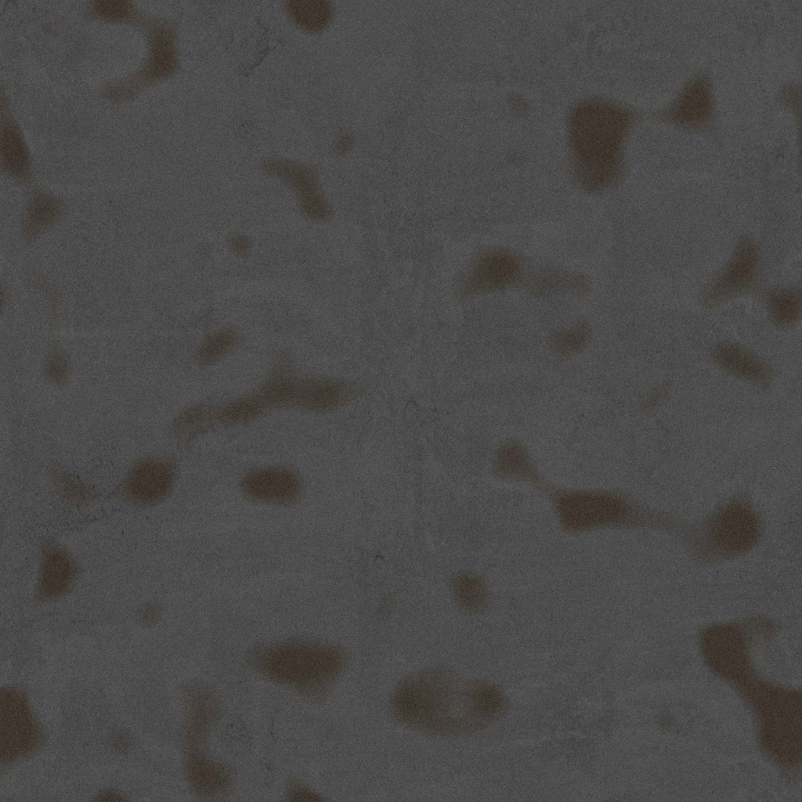
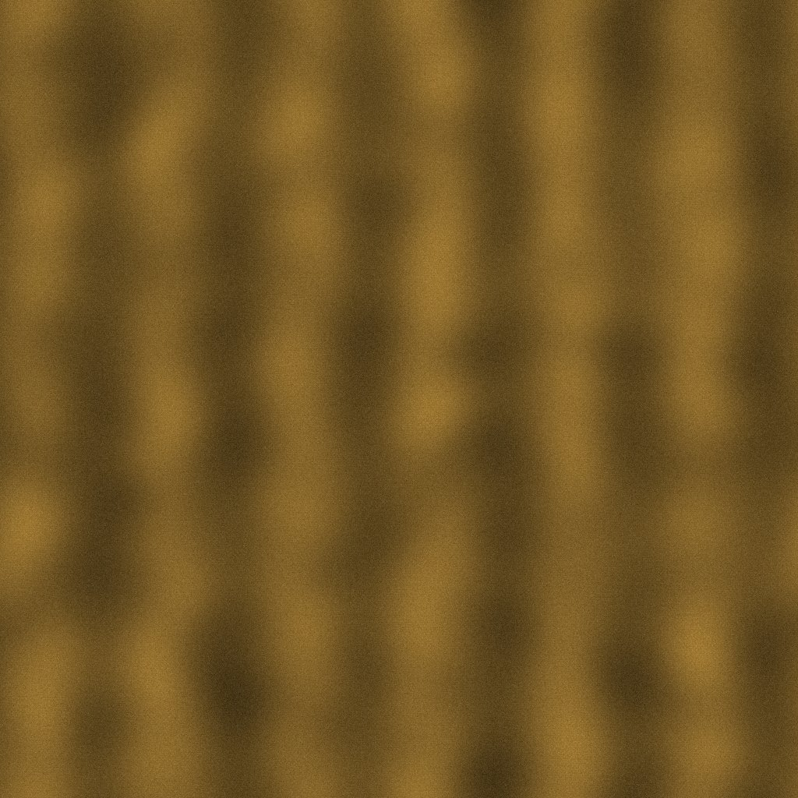

Fensterblick-Test · Blender-Cycles-Panorama (fern) + Mittel-Ebene (Parallaxe)
Desktop: Maus ziehen = umsehen, WASD gehen, Tasten 1–5 Szene, P = Parallaxe an/aus
VR: L-Stick gehen · R-Stick drehen · Laser+Trigger auf die Tafeln rechts





